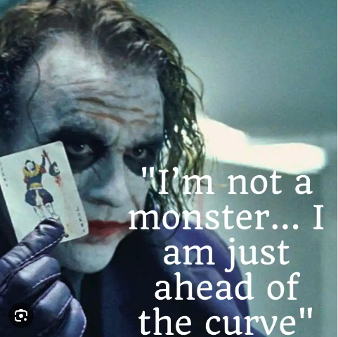

The Joker in "The Dark Knight" isn't just a force of chaos; he presents a moral argument against authority. One that challenges traditional perceptions of justice, governance, and power. To understand this, one needs to delve into his complex character traits and motivations, which can be inferred from his actions and dialogues throughout the film.
Firstly, the Joker's aversion to authority stems from his deep-rooted belief that power systems are inherently flawed and unjust. His campaign against Gotham's mob, police, and even its white knight, Harvey Dent, is a crusade against entities and individuals who act above the law. Through his lens, these figures represent an imbalanced system where power is hoarded, the rule of law is flexible for those at the top, and the marginalized have little to no recourse. In other words, he sees them as perpetuators of an unjust society where the deck is always stacked in favor of those in power.
Secondly, his disdain for authority could likely be the result of personal trauma, presumably involving his father, who was a drinker and a "fiend." From this perspective, the Joker's moral argument takes a more personal tone. His father, a figure of authority in his life, abused his power in the worst way imaginable. This instilled in the Joker a lifelong skepticism of anyone wielding power, and by extension, a desire to expose the inherent flaws in any system of governance or authority.
The Joker's means of exposing these flaws involve destabilizing these figures of authority to reveal their true nature. For example, he manipulates Harvey Dent, turning him into Two-Face, to show that even the seemingly incorruptible can become monsters under the right conditions. Similarly, he challenges Batman’s moral code, attempting to prove that even the Dark Knight could be driven to kill if pushed far enough. These actions demonstrate his point that authority figures are just as fallible as anyone else, and thus not inherently deserving of the power they wield.
Batman operates outside the legal framework, taking the law into his own hands to fight crime. Yet, he is celebrated as a hero, a beacon of hope in a city rife with corruption and vice. This contradiction is not lost on the Joker, who sees Batman as the epitome of the hypocrisy within systems of authority. Batman's vigilantism raises questions about who gets to wield power and under what conditions. While Batman perceives himself as a necessary force for justice, the Joker argues that this self-appointed role is equally problematic. Batman, despite his noble intentions, essentially operates as judge, jury, and, although he avoids it, potentially executioner—all roles traditionally and legally reserved for a society's system of governance. The fact that Batman is largely accepted by Gotham's citizens and even its police force points to a troubling exceptionality: society is willing to bend its own rules when it benefits from doing so. The Joker's effort to unmask Batman is an attempt to expose this moral inconsistency.
By forcing Batman into morally compromising situations, the Joker aims to reveal the flawed human beneath the mask and, by extension, the flawed logic that supports vigilante justice or any form of authority that hasn't been critically examined or democratically instituted. In trying to make Batman break his one rule—to not kill—the Joker wants to show that even this pillar of moral authority is susceptible to the corrupting influence of power. Therefore, Batman's role as a vigilante only strengthens the Joker's argument against the concept of authority. Whether it's elected officials, law enforcement, or even self-appointed guardians of justice like Batman, the Joker's actions in "The Dark Knight" force us to confront the uncomfortable ambiguities and potential pitfalls of placing unquestioned trust in those who wield power.
In conclusion, the Joker’s actions throughout "The Dark Knight" serve as a multi-layered, albeit twisted, moral argument against the concept of authority. He aims to expose the flaws, corruptions, and moral failings inherent in power structures, from the personal to the societal level. While his methods are undoubtedly extreme, the questions he raises about the morality of authority are both challenging and unnerving, forcing audiences to confront uncomfortable truths about the systems we live under.